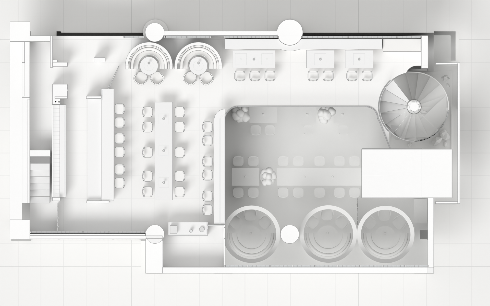
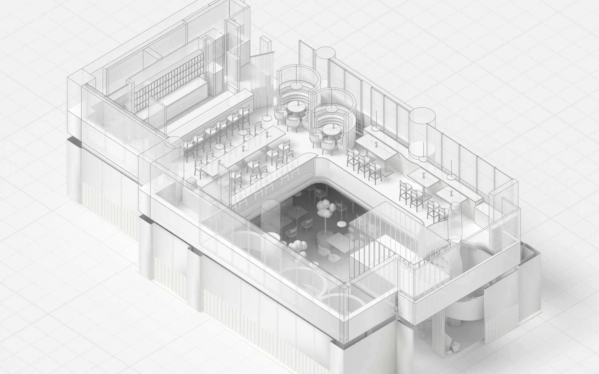
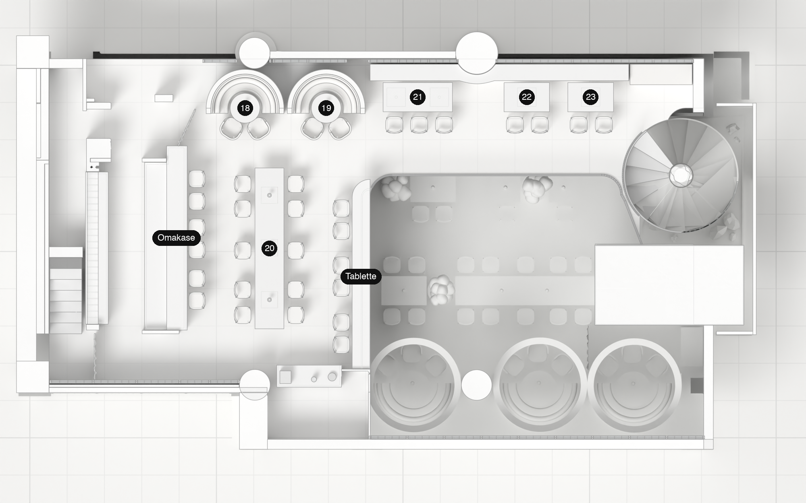
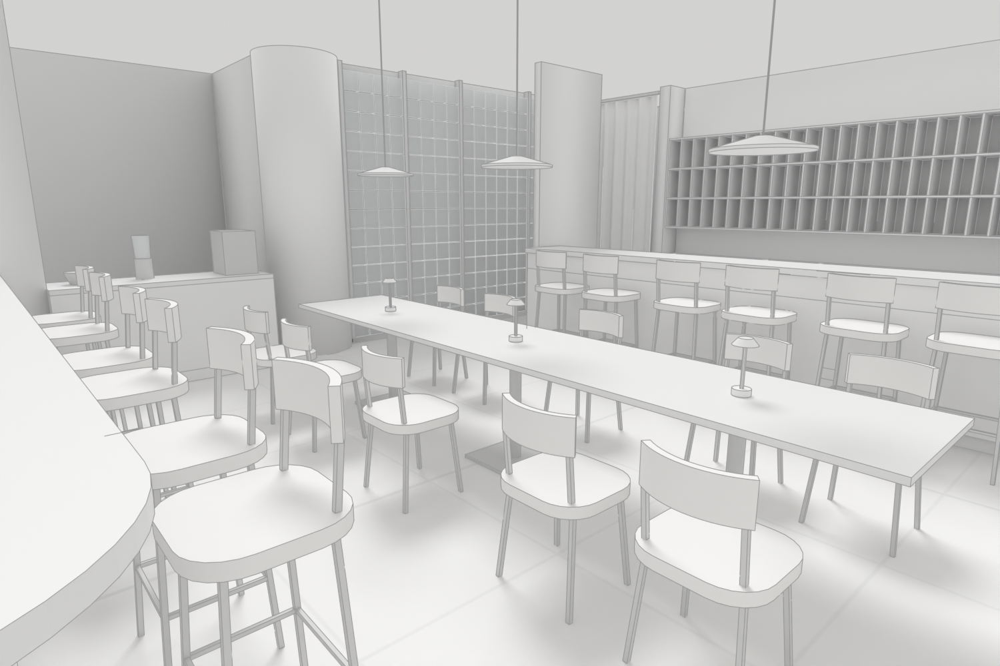
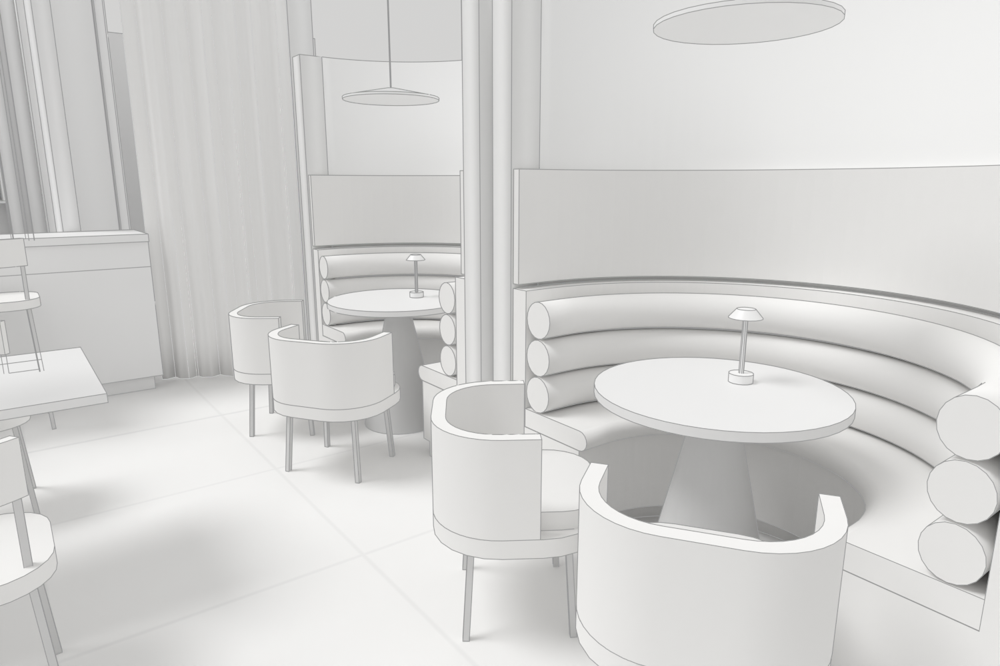
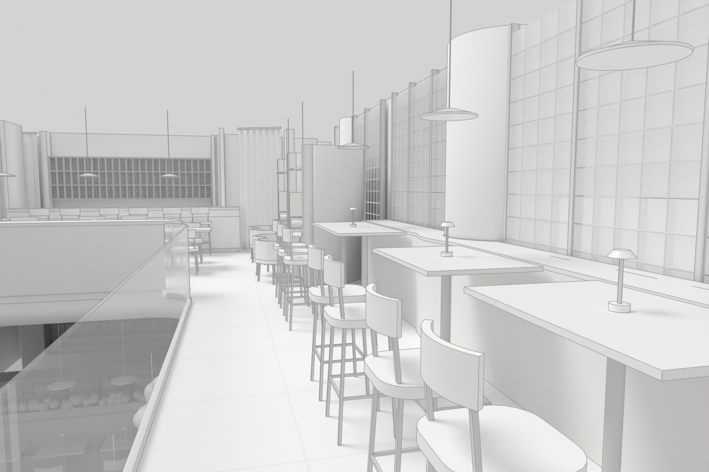
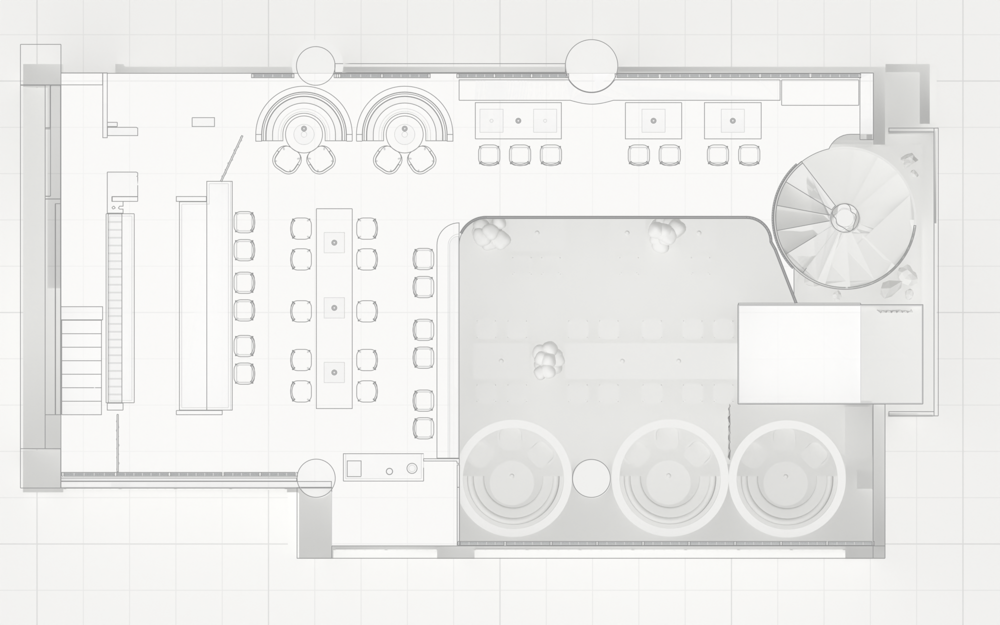
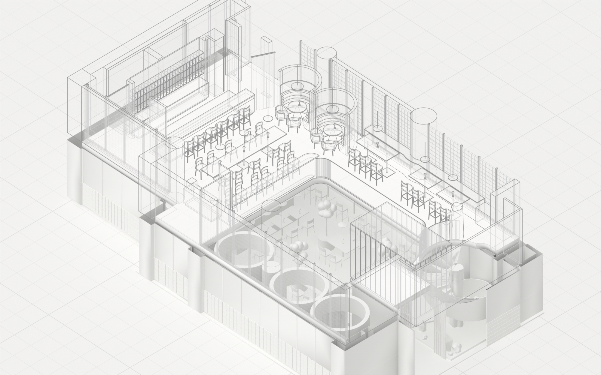

25/11/2026 · comme l'étape 4 du rez-de-chaussée : placé d'après le plan, en fantôme et en fil de fer
Tu as validé la liste du mobilier. Voici celui de la mezzanine, avec les mêmes pièces qu'au
rez-de-chaussée : 6 tables de service, le bar omakase et ses 6 tabourets, la tablette au bord du vide et ses 6
tabourets, la tablette en bois de la façade, les machines du laboratoire, les suspensions et les lampes de table.
Chaque table porte un numéro, à la suite de ceux du rez-de-chaussée. Aucun meuble ne touche un autre élément du
modèle.
Fantôme, le style par défaut
Le mobilier est coupé à 1,20 m comme le reste. Vu du haut, les suspensions sont masquées ; en 3D, elles sont en fantôme. Sous la mezzanine, le rez-de-chaussée meublé, en gris clair.

Vue du haut

Vue 3D
Les numéros de la carte

La vue du haut, avec le numéro de chaque table
N°
Table
Places
Assises
18
Demi-tambour 1
4
banquette en demi-cercle et 2 fauteuils
19
Demi-tambour 2
4
banquette en demi-cercle et 2 fauteuils
20
Grande table
10
chaises
21
Façade, table haute 1
3
tabourets
22
Façade, table haute 2
2
tabourets
23
Façade, table haute 3
2
tabourets
Omakase
Bar omakase
6
tabourets
Tablette
Tablette du vide
6
tabourets
37 places à l'étage, 68 au rez-de-chaussée. La liste est dans
modele/floor2-tables.json, avec la position de chaque table sur le plan et dans le modèle.
La grande table et le bar omakase

Le modèle, en blanc et à pleine hauteur
Le vrai lieu, photo 10 (au rez-de-chaussée)
La grande table est à 0,75 m, avec les dix chaises fines en acier du rez-de-chaussée, sur trois pieds : ce sont les trois points du plan. Une suspension plate au-dessus de chaque pied. Derrière, les six tabourets du bar omakase, comme ceux du bar du bas.
Les deux demi-tambours

Le modèle, en blanc et à pleine hauteur
Le vrai lieu, photo 20 (au rez-de-chaussée)
Dans chacun, une table ronde de 0,80 m sur un pied conique (le cercle du plan), deux fauteuils côté salle et la banquette en demi-cercle. Une suspension plate et une lampe, comme dans les tambours du bas.
Les tables hautes de la façade droite

Le modèle, en blanc et à pleine hauteur
Le vrai lieu, photo 8 (au rez-de-chaussée)
Trois tables hautes à 1,05 m, avec 3, 2 et 2 tabourets côté salle. Derrière elles, la bande continue du plan est une tablette en bois sous les pavés de verre, qui contourne le poteau : exactement comme au rez-de-chaussée.
Fil de fer, au choix dans l'application
Le même modèle, en arêtes seulement.

Vue du haut

Vue 3D
Les choix que j'ai faits
La bande le long de la façade droite (ma question d'hier, pas claire) : derrière les trois tables de droite, le plan dessine une bande continue qui longe la vitre et fait le tour du poteau. Au rez-de-chaussée, la même bande est une tablette en bois, avec des tables hautes et des tabourets (photo 8). Je l'ai donc faite pareille ici, pour que les deux étages soient cohérents.
La tablette au bord du vide a ses six tabourets, tournés vers le vide : on y boit un verre en regardant la salle du bas.
Le laboratoire a ses trois machines du plan sur le comptoir : un appareil, un mixeur et un bol.
Au bout de la façade, le rectangle du plan est une console basse en bois.
Les numéros suivent ceux du rez-de-chaussée (1 à 17) : 18 et 19 les demi-tambours, 20 la grande table, 21 à 23 les tables hautes. Le bar omakase et la tablette sont suivis tabouret par tabouret, comme le bar du bas.
Les suspensions sont masquées dans la vue du haut, comme en bas.
Questions
Les tables, les hauteurs et la tablette de la façade te vont-elles ?
La numérotation (18 à 23, plus l'omakase et la tablette) te va-t-elle pour la carte ?
La suite : l'export du 1er étage pour la carte, puis le bouton « 1er » qui fait passer d'un étage à l'autre, avec le service simulé sur les deux étages. On y va ?
Sources
LAIR Restaurant & Bar, Gurugram, par RENESA Architecture Design Interiors Studio (2024). Les
photos sont d'Avesh Gaur, sur ArchDaily. Elles servent seulement de référence pour la modélisation.